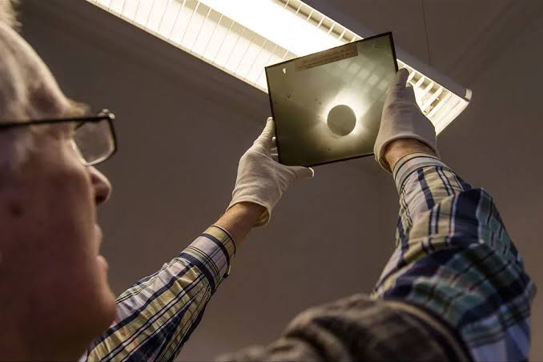

Astrometri
Digunakan untuk mempelajari posisi dan pergerakan objek langit.

Mengenal koleksi pelat fotografi astronomi dan proses mengubahnya menjadi data digital untuk menjaga rekaman pengamatan masa lalu.

Pelat kaca merupakan benda fisik yang perlu dirawat dengan hati-hati karena dapat mengalami kerusakan. Kondisi pelat juga dapat berubah akibat penyimpanan dan usia.
Digitalisasi dilakukan dengan membuat salinan dalam bentuk digital sehingga informasi yang terdapat pada pelat dapat disimpan, dipelajari, dan digunakan kembali tanpa harus terus-menerus menggunakan benda aslinya.
Observatorium Bosscha telah melakukan upaya digitalisasi pelat fotografi sejak tahun 2015.
PROSES DIGITALISASI
Digitalisasi tidak hanya dilakukan dengan memindai pelat. Setiap tahap dilakukan agar informasi dan kondisi koleksi tetap dapat dipertahankan.
Mencatat informasi pelat seperti tanggal pengamatan, objek yang diamati, dan teleskop yang digunakan.
Memeriksa kondisi fisik pelat dan menangani debu atau kotoran dengan hati-hati.
Memindai pelat menggunakan perangkat yang mampu menghasilkan gambar digital beresolusi tinggi.
Mengolah hasil pemindaian agar gambar dan informasi objek dapat digunakan kembali.
Menyimpan hasil digitalisasi dan memberikan metadata agar koleksi mudah ditemukan.
VIDEO PEMBELAJARAN
Video ini membahas foto astronomi yang direkam menggunakan pelat kaca serta nilai sejarah dan ilmiah dari koleksi tersebut.
PEMANFAATAN DATA
Hasil digitalisasi dapat digunakan kembali untuk berbagai kebutuhan pembelajaran dan penelitian astronomi.
Digunakan untuk mempelajari posisi dan pergerakan objek langit.
Digunakan untuk mempelajari tingkat kecerlangan objek astronomi.
Digunakan untuk mempelajari informasi dari spektrum cahaya objek astronomi.
Digitalisasi pelat kaca membantu menjaga rekaman pengamatan astronomi agar tetap dapat dipelajari dan dimanfaatkan pada masa sekarang. Koleksi yang sebelumnya tersimpan dalam bentuk fisik dapat diubah menjadi data digital yang lebih mudah dikelola dan digunakan kembali.